Mira Eiene Foust
Prosjekt
Replikk" ✦
24 timers tegneseriemaraton
A Film With No Name
YMT magasin
Bachelor oppgave ✦
Andre arbeid
Illustrasjon ✦
Animasjon
Trykk
Plakat og tekst
Om meg
YMT

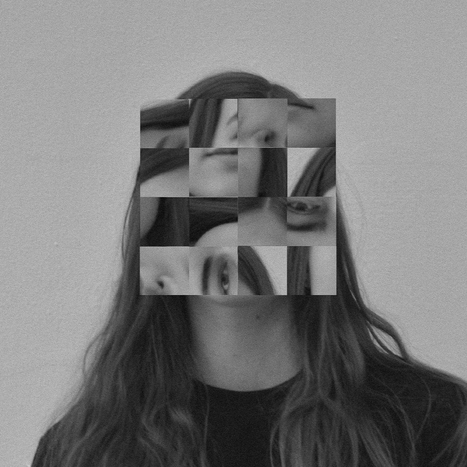

"YMT is published by Visual communication, Design, Faculty of Fine Art, Music and Design, University of Bergen © YMT 1, 2019; YMT 2, 2020; YMT 3, 2021, YMT 4 2022, YMT 5 2023
YMT is an experimental publication about Visual Communication Design as a field of knowledge and is available in a limited edition print and is open source online."
YMT is an experimental publication about Visual Communication Design as a field of knowledge and is available in a limited edition print and is open source online."
Utvikling
Tema for YMT vol.5 var kunstig intelligens. Stikkord for uttrykket er nettverk, kunstig læring og digitale feil.
Alle disse store valgene for retning, tone og stil for magasinet var valg vi tok sammen som en redaksjon.
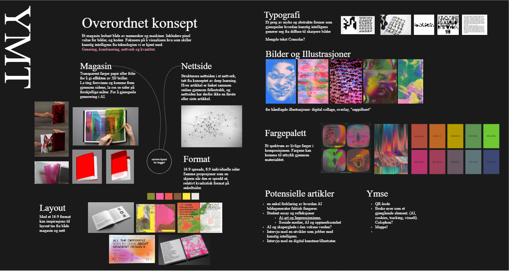
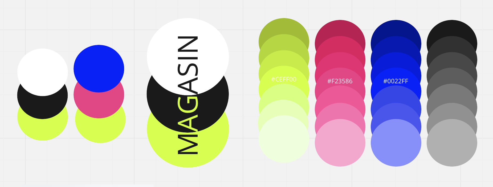
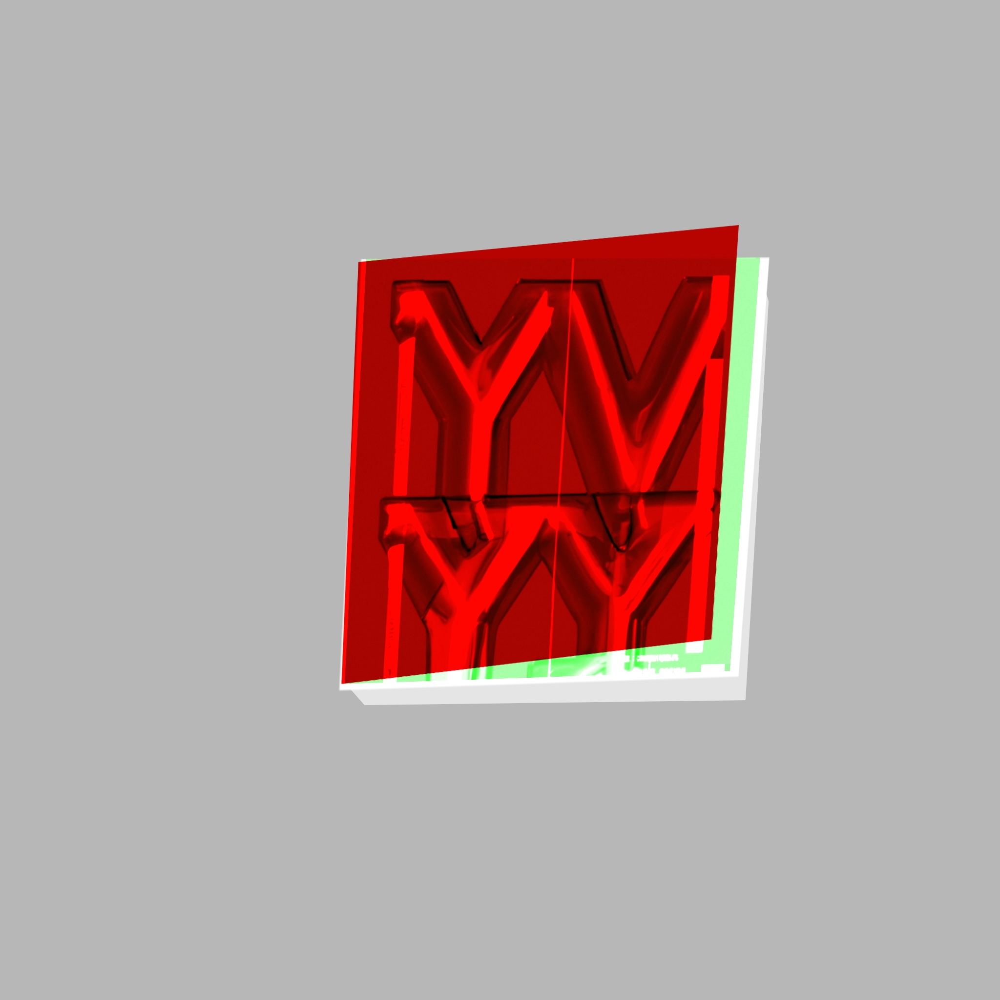

Forslag til smusscover, laget av meg. Skjulte (?), overvåking og samling av personlig data var inspirasjon for disse.
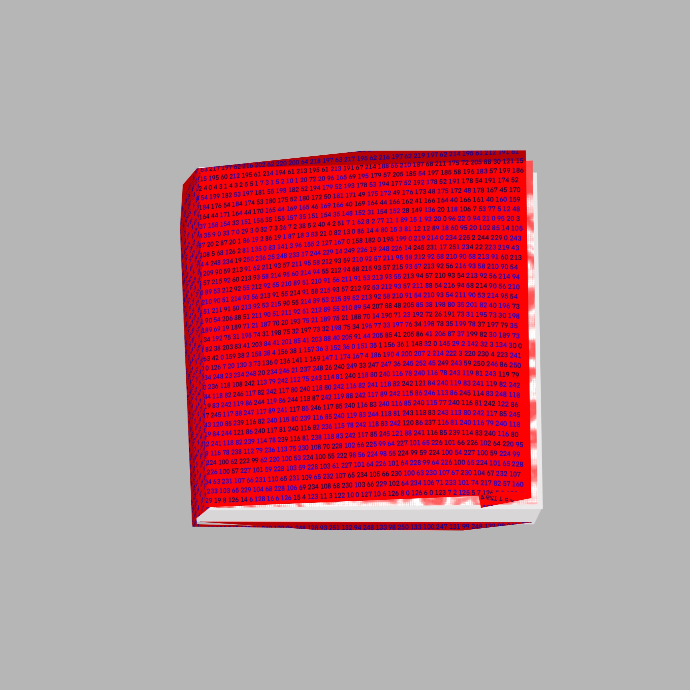
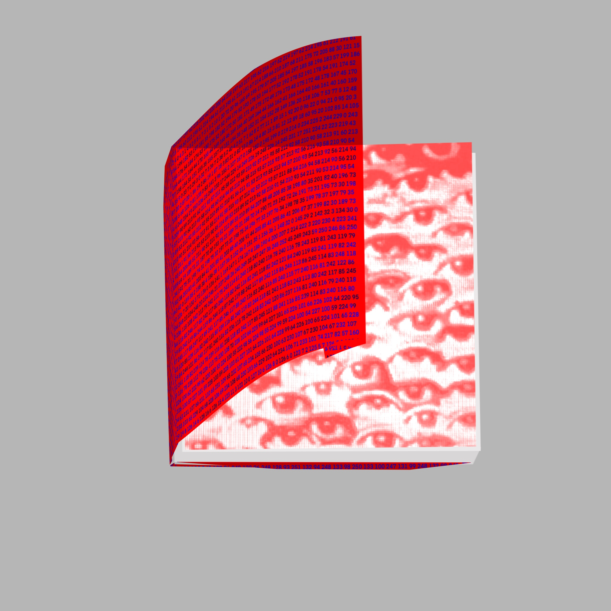
YMT gis ut både som trykk og som nettside. De skal fungere sammen som en helhet. En måte vi gjorde det var å bruke lignende visuelle virkemiddel,
som det uskarpe uttrykket fra kalketpapiret ble en blur effekt på nettsiden, det gradvis mer rotete oppsettet i magasinet ble bevegende overskrifter på nettsiden.
 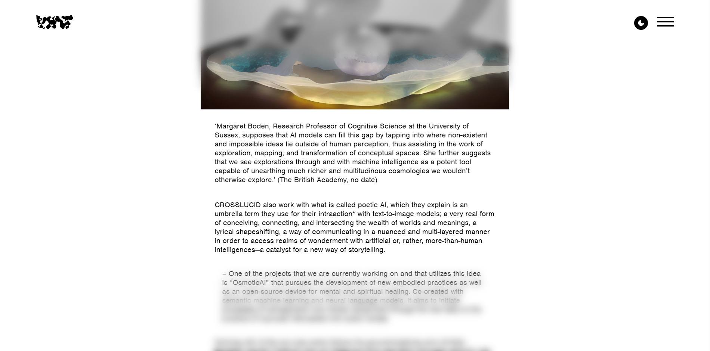
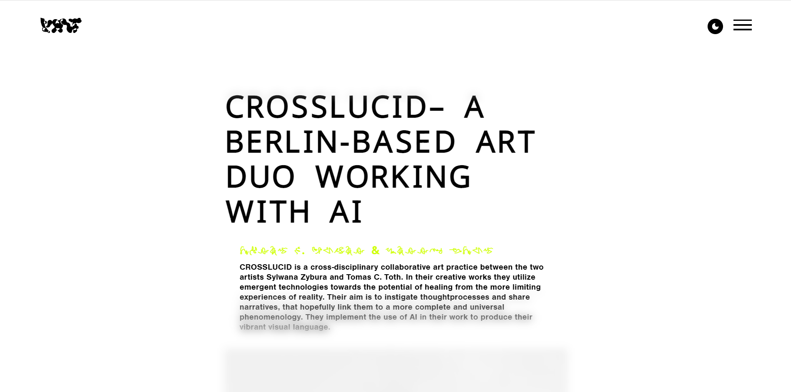
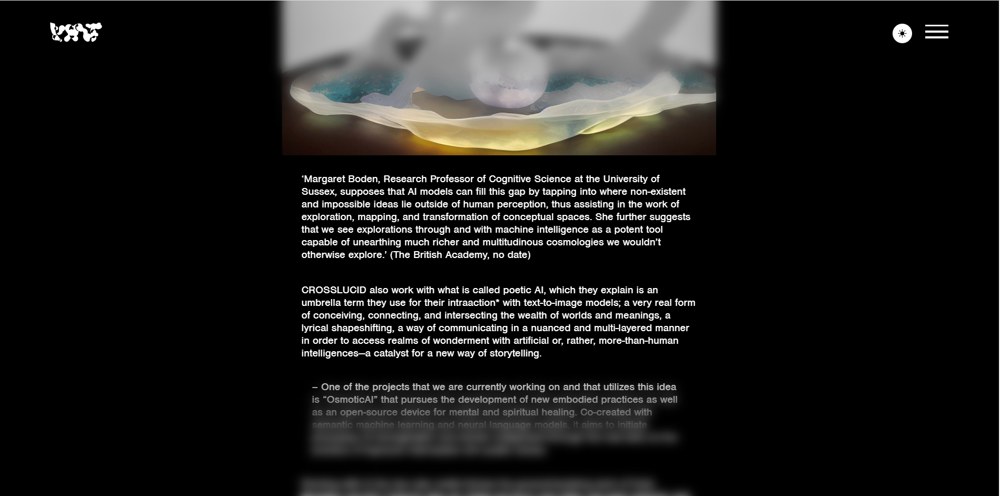
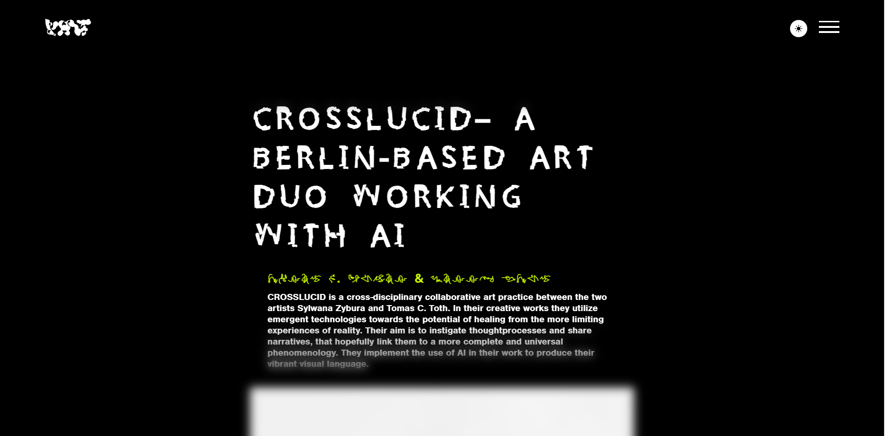
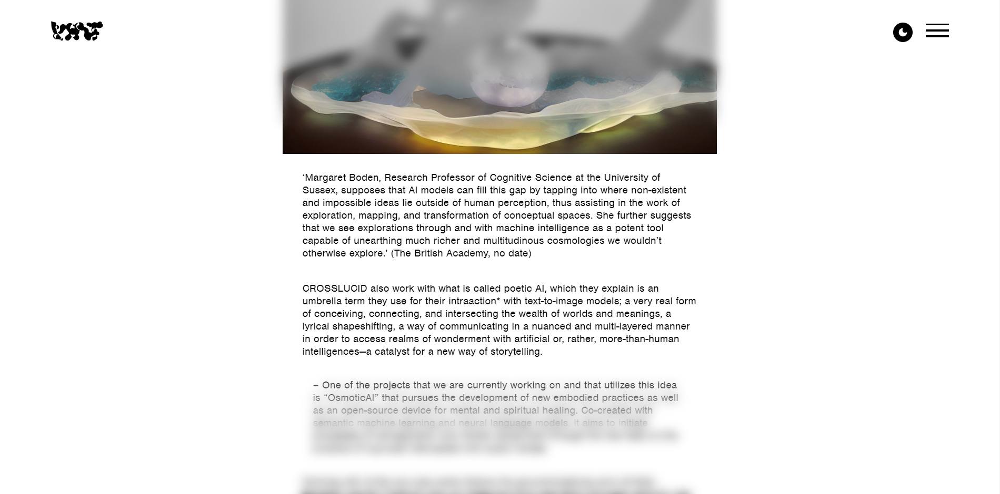
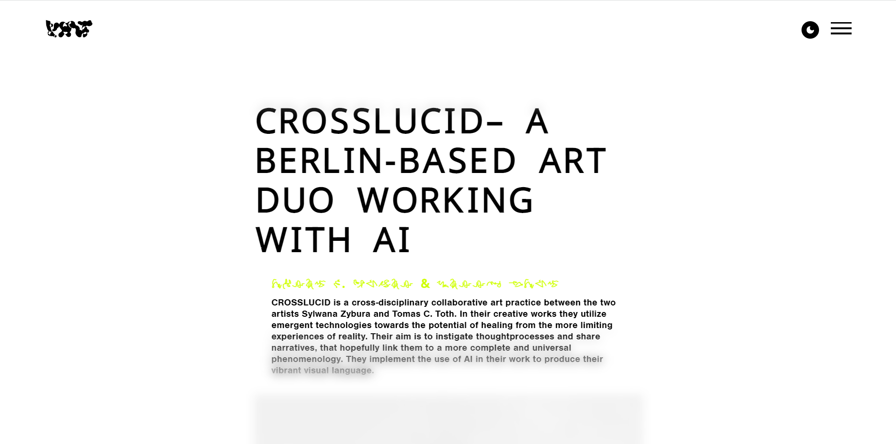
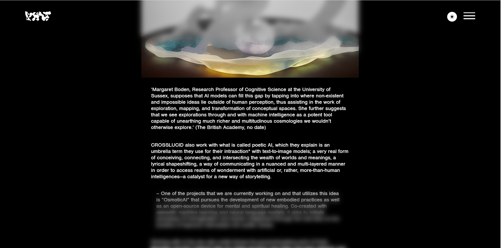
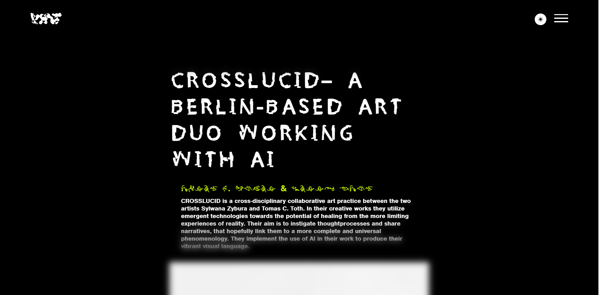
Art direction
Agnes Bohinen Muren | Anette Olianna Walbeck | Lene Marie Sæthre | Mina Kristine Aarseth | Maiken Larsen Solholmvik | Sigve Tiller | Thondiv Ela Calip
Layout and print
Carolina Christina Lykins | Ida Kristine Ones | Jenny Karen Gautesdatter Paus | Louise Häggström | Maria Stene Holstad | Marion Ingvaldsen Høydal | Marius Hansen Høgåås | Malgorzata Kuznik | Ulva Bendiksen Vikse | Fredrik M. Salhus
Online house
Clara Neegard | Martin Magnussen | Mira Foust | Scott Bodin | Siri Angvik
Lærere
Dóra Ísleifsdóttir | Åse Huus | Magnus Nyquist
Printing
Aksell
Agnes Bohinen Muren | Anette Olianna Walbeck | Lene Marie Sæthre | Mina Kristine Aarseth | Maiken Larsen Solholmvik | Sigve Tiller | Thondiv Ela Calip
Layout and print
Carolina Christina Lykins | Ida Kristine Ones | Jenny Karen Gautesdatter Paus | Louise Häggström | Maria Stene Holstad | Marion Ingvaldsen Høydal | Marius Hansen Høgåås | Malgorzata Kuznik | Ulva Bendiksen Vikse | Fredrik M. Salhus
Online house
Clara Neegard | Martin Magnussen | Mira Foust | Scott Bodin | Siri Angvik
Lærere
Dóra Ísleifsdóttir | Åse Huus | Magnus Nyquist
Printing
Aksell